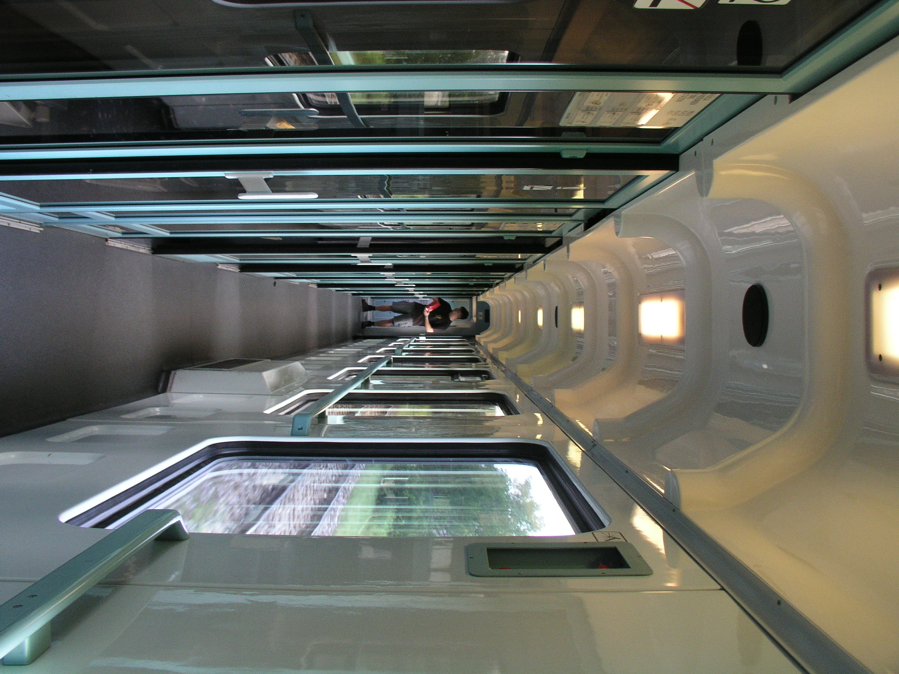

Már kiskoromban is nagyon szerettem rajzolni, de egészen gimnáziumig, meg se fordult a fejemben, hogy ezzel szeretnék foglalkozni. Utolsó gimis éveimben jött elő ez a vágy, mikor is testvérem miatt elkezdtem egy külön rajzstudióba járni.
Ez a studió rámutatott arra, hogy nekem szükséges az, hogy amivel foglalkozni fogok a jövőben, annak legyen valamennyi köze a művészethez/alkotáshoz. Emiatt is választottam a BME-n a formatervezést.
Ezen kívül mindig is érdekelt a 3D-s modellezés. Blendert tanulok magamtól, de még idő mire eljutok egy olyan szintre, hogy tényleges műveket vállalhassak fel.
Jártas vagyok még néhány digitális rajz szoftver használatában is, mint például a krita, clip studio paint.
Érdekel még a fotózás is. Van egy nagyon idős olympus c-5050 zoom kamerám, amivel főleg baráti összejöveteleken, kirándulásokon szoktam fotózni. Résztvettem egy kamerás workshopon is gimnáziumi tanulmányaim alatt. Főleg digitális képeket csinálok, de nem rég találtam egy filmes kamerát is, szóval a jövőben lehet azt is kipróbálom.

Életemben nagy részt vesz ki még a cserkészet. 2016-ban kezdtem el még a 4.sz BIK cserkészcsapatban, ami sajnos ma már önállóan nem műkődik. Az a nagy szerencse ért engem, hogy felkértek őrsvezetőnek még 2020-ban, így az őrsvezető képzést
elvégezve, átkerültem egy másik csapatba. Azóta is ott vezetek őrsöt, és idén már egy rajt is vezetek. A cserkészet miatt elég sok tapasztalatom van szervezés, logisztika terén.
A csapat blogja
Email: helenalosonczi@gmail.com